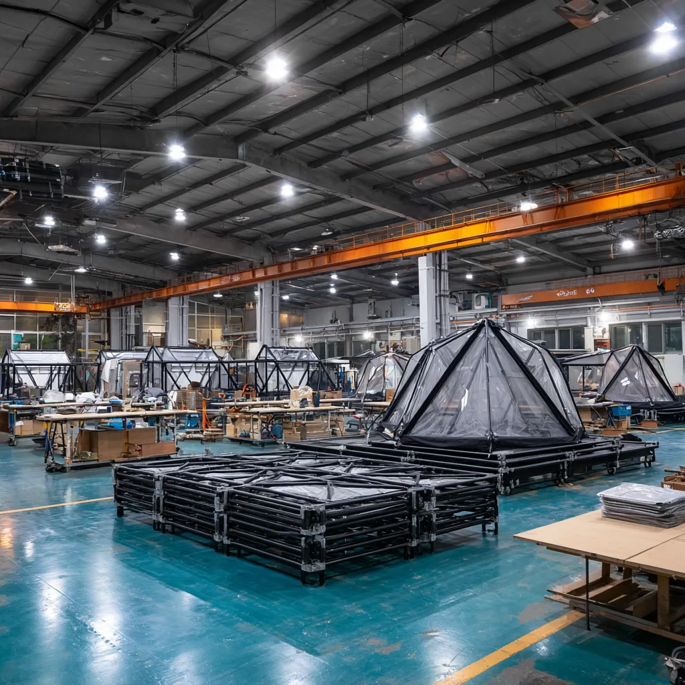

WOCS의 전체 제품 라인업, 기술 스펙, 인증 정보를 담은 자료를 다운로드하세요.

프로젝트 기획에 필요한 모든 자료를 한곳에서 받아보세요.
D-시리즈 돔, S-시리즈, Signature 시리즈, 모듈러 시스템까지 — 전체 제품 라인업과 기술 스펙, FITI 인증 정보, 시공 프로세스를 24페이지에 담았습니다.
16개 모델 × 4가지 배리언트, 총 64종의 개별 브로셔를 하나의 ZIP 파일로 제공합니다. 고객 미팅이나 투자 제안서에 바로 활용하세요.